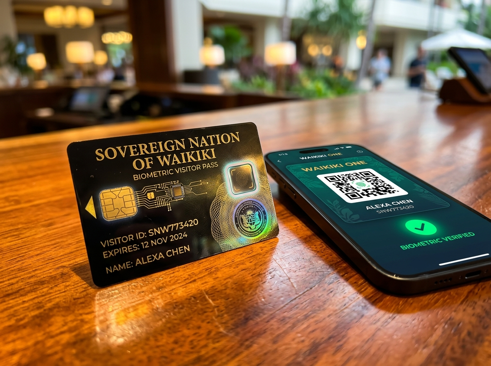

Visa and Entry Requirements
Clear entry policies, biometric SmartBorder clearance, and digital e-Visa solutions designed for effortless access to the Sovereign Nation of Waikiki.
A Welcoming and Secure Border Philosophy
Waikiki balances sovereign territorial integrity with world-class hospitality. Welcoming over 45 million international travelers every year, our border infrastructure eliminates physical bureaucracy and replaces endless lines with frictionless digital clearance.
Reciprocal Freedom of Travel
Bilateral agreements with the American Union, the European Union, the Commonwealth, and East Asian partners guarantee hassle-free short-term travel for holidaymakers, scholars, and entrepreneurs.
- Standard StayUp to 90 Days
- Visa Processing Fee0 WUD (Disfavored fees waived)
- Eligible Nations65 Treaty Partners
SmartBorder Contactless Gates
Equipped with 3D multi-spectral facial mapping and iris verification, our automated entry corridors confirm traveler identity in seconds without handling physical stamps or paper landing cards.
- Gate Scan DurationUnder 3 Seconds
- Verification Accuracy99.999% Multimodal
- Average Terminal Transit12 Seconds Total
Waikiki One Visitor Ecosystem
Your encrypted travel authorization pairs seamlessly with the Waikiki One mobile app, serving as your digital room key, public transit token, and contactless sovereign payment card throughout the islands.
- App IntegrationAll-in-One Digital Pass
- Local TransitMaglev and Metro Included
- Emergency Health24/7 Multilingual Support
Entry Categories and Authorizations
Whether traveling for leisure, international trade symposiums, scientific research at the Nova Aurelia Space Center, or maritime exploration, choose the pathway suited to your journey.
Visa-Free Tourist Entry
Available to holders of valid ordinary passports from the American Union, EU member states, United Kingdom, Canada, Japan, South Korea, Australia, New Zealand, and Singapore.
- Allowed Stay30 to 90 Days
- Application RequirementPre-departure Waikiki One check
- Cost0 WUD
- Extension Option30 days online extension
Waikiki One e-Visa
For travelers from all other recognized countries. Submit your passport scan and itinerary online through our official consular gateway with automated approval delivered in minutes.
- Allowed Stay30 Days (Single or Multiple)
- Turnaround TimeUnder 15 Minutes
- Government Fee35 WUD (approx $88 USD)
- Validity Window90 Days from issuance
Business and Investor Pass
Tailored for corporate executives, trade delegates, and investors engaging with the Sovereign Wealth Fund, Nova Aurelia Financial District, or regional manufacturing hubs.
- Allowed Stay90 Days per visit
- Pass Validity1 to 3 Years Multiple Entry
- Government Fee120 WUD
- VIP PrivilegesAurelia Diplomatic Lounge access
Transit and Maritime Cruising
For flight transfers through Aurelia Intercontinental Spaceport or private yachts and cruise vessels navigating sovereign Caribbean and Pacific territorial waters.
- Transit DurationUp to 48 Hours
- Maritime Cruising30-day Island Permit
- Air Transit Fee0 WUD (Complimentary)
- Yacht Cruising Fee50 WUD per vessel
The SmartBorder 2030 Experience
Experience the world's most progressive arrival corridor. Designed by leading cybernetic architects and border engineers, Waikiki offers a completely paperless welcome from runway to resort.
Instant Facial and Iris Authentication
Walk through our natural light corridors at ordinary walking speed. High-precision sensors match your encrypted biometric token without requiring passport booklet extraction.
Sovereign Privacy and Data Protection
Biometric tokens are processed locally under strict statutory guarantees. Personal identifiers are never sold or shared with commercial advertising entities and expire automatically upon departure.
Connected Island Mobility
Your entry token unlocks immediate boarding access to the Nova Aurelia Express Maglev train, connecting the international air terminal directly to the financial and cultural districts in eight minutes.

Waikiki One Digital Visitor Pass
Holographic sovereign card and smartphone companion app storing encrypted border tokens, museum admissions, and tap-and-pay wallet.
Interactive Entry Requirement Checker
Check your specific travel requirements before you fly. Select your nationality and travel purpose to review document requirements, stay limitations, and applicable fees.
All travelers must possess a valid passport with at least six months remaining validity and complete pre-departure Waikiki One registration.
Automatic Biometric Clearance
You are eligible to enter the Sovereign Nation of Waikiki visa-free for tourism, cultural exchange, and business meetings.
- Valid national passport (minimum 6 months validity beyond travel)
- Free pre-departure Waikiki One digital registration token
- Proof of return or onward transportation booking
- Contactless pass through SmartBorder biometric e-gates
Four Effortless Steps to Arrival
From pre-departure registration on your smartphone to stepping out onto the palm-fringed boulevards of Nova Aurelia, follow our simplified four-stage sequence.
Digital Registration
Between 72 hours and 2 hours before takeoff, register your passport in the Waikiki One application. Upload your photo and complete the brief environmental questionnaire.
Boarding Pass Sync
Your airline confirms entry clearance automatically through Waikiki's international consular API. Receive your dynamic encrypted QR entry pass on your device.
SmartBorder Walkthrough
At Nova Aurelia Intercontinental or Port Sovereign, step through our biometric e-gate corridors. The three-second scan matches your record and opens the gate.
Welcome and Connect
Retrieve luggage from automated carousels, tap your mobile pass to board the express maglev, and access 24/7 multilingual guest assistance anywhere in the realm.
Customs Regulations and Environmental Safeguards
As stewards of delicate Caribbean coral reefs and biodiverse Amazonian preserves, Waikiki maintains clear customs allowances and rigorous environmental protection laws.
Duty-Free Allowances
Adult visitors can bring personal items and gifts into Waikiki without customs duties under generous statutory allowances.
- Personal electronics, cameras, and laptops
- Up to 1 liter of spirits or 2 liters of wine
- 200 cigarettes or 50 handmade cigars
- Personal gifts valued up to 1,000 WUD
Currency Declarations
There are no limits on the movement of foreign funds or gold bullion. Transparency declarations are completed digitally upon arrival.
- No restrictions on credit cards and digital wallets
- Cash exceeding 50,000 WUD requires digital declaration
- Sovereign Unit Dollar accounts available for visitors
- Direct exchange booths in all international terminals
Strict Ecological Bans
To preserve our pristine ecosystems, contraband items are confiscated immediately at border control checkpoints.
- Single-use non-biodegradable plastics and bags
- Uncertified fresh fruits, vegetables, seeds, and soil
- Live animals without prior veterinary clearance
- Endangered flora and fauna derivatives
Drones and Aerial Filming
Waikiki strictly protects privacy and air corridors near sovereign institutions and launch centers.
- Recreational drones under 250g require free app registration
- Commercial drones require flight permits from Aviation Authority
- Strict no-fly zones around government pyramids and spaceports
- Designated scenic aerial photography parks available
Frequently Asked Questions
Essential answers regarding passport requirements, stay extensions, family travel, and emergency consular support in the Sovereign Nation of Waikiki.
Q How long must my passport be valid before traveling to Waikiki?
All visitors must hold a passport valid for at least six months from the planned date of departure. Passports must have at least one blank page for emergency stamp endorsements, although routine entry is entirely paperless.
Q Can I extend my stay while inside the country?
Yes. Both visa-free travelers and Waikiki One e-Visa holders can request a 30-day extension directly through the Waikiki One application without visiting an immigration bureau. A nominal extension fee of 25 WUD applies.
Q Is travel medical insurance included or required?
Visitors from treaty partner nations enjoy reciprocal emergency care. All other visitors automatically receive basic sovereign emergency and rescue coverage included with their Waikiki One digital registration token at zero extra charge.
Q Can a tourist apply for residency or Citizenship by Merit?
Visitors who establish eligible investments, corporate headquarters, or qualified research partnerships may file an in-country status adjustment request with the Ministry of the Interior and Immigration Authority in Nova Aurelia.
Q What entry protocols apply to private yachts and private aircraft?
Captains must submit an advance digital manifest through the Waikiki One Maritime and Aviation Portal at least twelve hours prior to entering sovereign territorial airspace or waters. Berthing passes are issued upon docking at designated marinas.